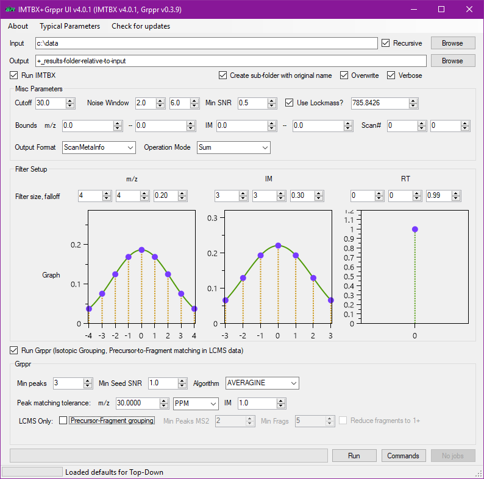

Quick Start¶
Download¶
Follow this GitHub repository link to get the latest available pre-built binaries.
Note
64-bit Windows only. NET 4.5.2 required, It won't work under Mono.
IMTBX+Grppr through the GUI¶
In the download zip package, you will find ImtbxGrpprGui.exe which is the
graphical user interface for running both IMTBX (raw peak detection) and Grppr
(isotopic grouping, precursor-to-fragment matching).
Batch processing tip
Recursive option to process multiple input files at once (see the checkbox in the top right part of the screenshot) is only available in the GUI. When running from command line you will need to adapt your scripts.

IMTBX from the command line¶
Easier start
The GUI has a button Commands to display the command line options. You can tweak the options in the GUI and see what the command line becomes. This is especially useful for the filter size and shape.
- Show available commands:
IMTBX.exe help - Show documentation for the
peakscommand that extracts single features from raw data:IMTBX.exe help peaks - Detect peaks in Top-Down mode (the most basic version):
IMTBX.exe peaks --mode Sum -wvl -o "+Results" -i "path/to/input.RAW"- The
+sign in-oargument tells the program that the output path is relative to the input path. You could also use+../Results-2017to place the results into a new subfolderResults-2017on level higher that the input file, or just use an absolute path.
- The
-
Detect peaks (specifying filter size and shape):
IMTBX.exe peaks --mode Sum -wvl -f 2 2 1 1 2 2 --hyper 0.2 0.5 0.3 --orig -o "+Results" -i "path/to/input.RAW"--filterspecifies the filter size in points.-
--hyperspecifies how quickly the filter falls off. -
-ois the output, which defaults to the same directory as input. Note that this path can be:- Absolute path, no surprises here.
- Can start with
+, meaning that the path is relative to the input. - Start with
., meaning relative to working directory.
--origflag makes it put all the results in yet another subfolder inside the one specified as-o. This is useful if you use an absolute path for-o, e.g.c:\results, and want to put the peaks files for each input file to a separate subfolder with the same name as the original RAW.--cutallows to specify the global intensity cutoff value and separate cutoffs for each function. The first value after cut is the global cutoff, after that come pairs like2 30, meaning set cutoff 30 for function 2.--cut 100 2 50 7 15: cutoff at 50 for function 2, at 15 for function 7, at 100 for all other functions.
Example for Top-Down
IMTBX.exe peaks -vw --mode Sum --clean True --cut 30 --filter 4 4 3 3 0 0
--hyper 0.2 0.3 0.99 -n True --noise True --noiseWnd 2 6 --snr 0.5
-i "<input-path>" -o "<output-path>" --orig
Example for LCMS
IMTBX.exe peaks -vw --mode ScanByScan --clean True --cut 10 --filter 1 1 1 1 1 1
--hyper 0.4 0.5 0.5 -n True --noise True --noiseWnd 2 4 --snr 0.5
-i "<input-path>" -o "+../Results" --orig
Grppr from the command line¶
Easier start
The GUI has a button Commands to display the command line options. You can tweak the options in the GUI and see what the command line becomes. This is especially useful for the filter size and shape.
- Show available options:
java -jar grppr-0.3.14.jar - Boolean parameters that are
falseby default are flags, which means that to activate them, you need to pass only the flag itself, e.g.-wto overwrite existing files. If a boolean parameter istrueby default, then to turn it off you need to pass--option-name False - Grppr can perform only isotopic cluster detection or cluster detection and
precursor fragemnt grouping:
- (for Top Down)
-g Falseor--group Falsewill turn off precursor-to-fragment grouping which is only needed for LCMS data. - (For LCMS) by default
--groupisTrue
- (for Top Down)
--isoAlg AVERAGINEis the preferred deisotoping method. Will attempt to determine the true location of the monoisotopic peak using the Averagine peptide model.-d 1 3this option stands for deisotope.1 3means for function 1 require at least 3 peaks to call an isotopic cluster. This option can be specified multiple times, e.g.-d 1 3 -d 2 2which would mean minimum 3 peaks for MS1, minimum 2 peaks for MS2. Note that there is a difference between not requesting deisotoping (-d 1 0) and deisotoping with a minimum of one peak (-d 1 1). When no deisotoping is requested, all peaks are treated separately, so if there is an actual cluster made of 5 peaks, they will all be reported separately. When deisotoping with a minumum of one peak is requested, the program will attempt to group all 5 together and report just one ion. If some of the peaks don't pass criteria, they will still be reported as single peaks in that particular case.
Example for Top Down
The data here is assumed to be all in function 001.
java -jar grppr-0.3.14.jar -d 1 3 --dSnr 2.0 1.0 --isoAlg AVERAGINE
--isoMzV 30.0 --isoMzT PPM --isoTi 2.0 -g False -w -v -i "<path-to-input>"
Example for LCMS
java -jar grppr-0.3.14.jar -d 1 2 --dSnr 1.0 1.0 --isoAlg AVERAGINE
--isoMzV 30.0 --isoMzT PPM --isoTi 1.0 -g True -d 2 1 --minFragPeaks 5
-w -v -i "<path-to-input>"